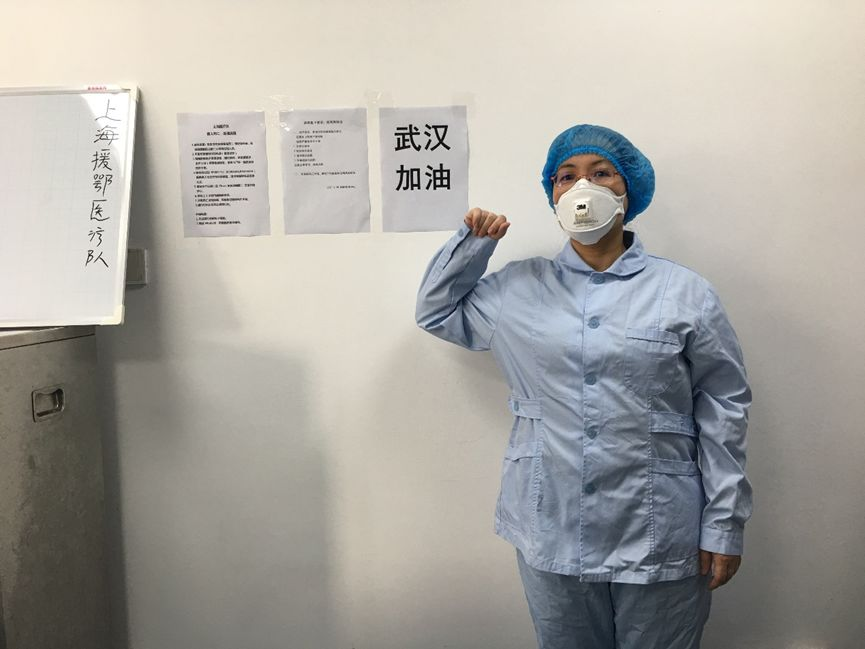
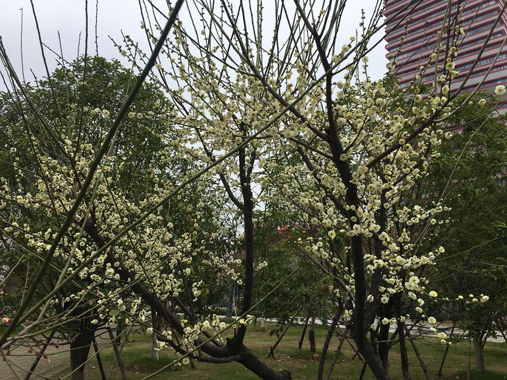
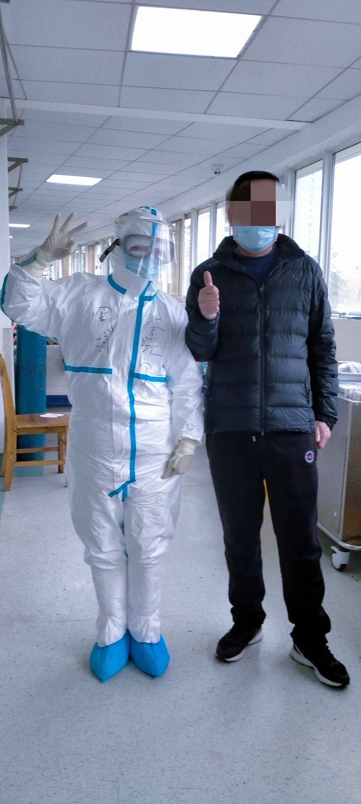
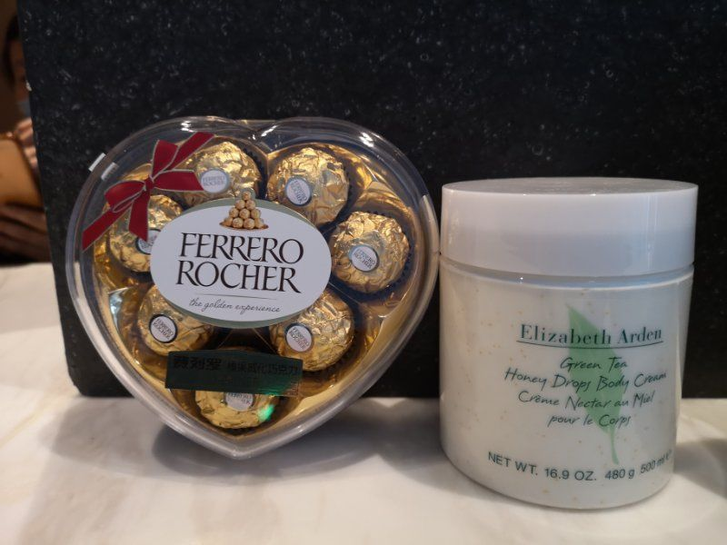

口述实录｜疫情席卷下，一个普通武汉市民的30天心路历程
原文链接 备份链接 我住在汉口，是这次疫情的重灾区。那个被查出疫情源头的华南海鲜市场，就在火车站对面，离我家大概20公里。我希望疫情早日结束，对我们国家的经济影响小一些，所有人都能够平安和健康。 口述 | 小 玲 整理 | 沈 林 我叫小 …

写日记不仅能够记录工作，还成为她自我解压的好办法。
文 | 黄 祺 袁蕙芸
年初一晚上，上海交大医学院附属仁济医院查琼芳医生，在武汉的宾馆房间里写下了第一篇“战地日记”。
从小年夜（1月23日）接到出发通知，到除夕夜出发，再到抵达武汉接受岗前培训——查医生经历了特殊的两个日夜，情绪起起伏伏。培训会上，领队特意嘱咐，大家要恢复平静的心态，冷静应对接下来的苦战。

培训结束后回到房间，查医生决定从记录工作开始冷静自己。她说，第一篇日记其实是工作汇报，主要是给远在上海的单位领导汇报到达武汉后的情况，给同事们报个平安，同时也梳理一下心绪。
但没想到，从那一天起，日记一天也没有落下，至今已经写了22篇。
后来查琼芳发现，写日记不仅能够记录工作，还成为她自我解压的好办法。

查琼芳医生工作的武汉金银潭医院，是武汉市最早集中收治新冠肺炎病人的医院，上海医疗队接管的重症病房里，患者病情也是最重的。医护人员们的工作强度和工作压力，可想而知。
虽然平时仁济医院的工作也非常辛苦，但这是第一次在强传染性的疫情中工作，而且是在高风险的重症监护室里工作，对查琼芳来说，是一种完全不同的压力。
武汉金银潭医院，最初因为没有取暖设备，第一个夜班后护士冻红的手引起了社会关注。查医生说，如今社会各界捐赠了很多物资，病房里有了“小太阳”，贴了暖宝宝，还有人捐大衣，晚上上班已经不冷了，“和刚来时比简直是天上地下”。
如果不是疫情，查医生准备把母亲接到自己家，平时工作忙，看望不多，过年过节把母亲接到身边，是她最大的愿望。查医生家的两个冰箱，也被她塞满了年货——每年的年夜饭，她是大家庭的主厨，亲人们给她打下手，十来人的一桌饭不成问题。
查医生说，春节还有个愿望，是睡到自然醒——作为仁济医院呼吸科一个病区的病区大组长、一个独当一面的高年资医生来说，睡到自然醒是一年中难得的奢侈享受，“做梦都想做的事情”。
小年夜接到领导电话，查琼芳医生一点没有犹豫就报名参加了医疗队，“这样的时刻，不挺身而出对不起医生的称号，也对不起党员的称号”。

说起疫情结束后想干点什么，查医生的第一个愿望是不戴口罩——因为口罩戴太久了；第二个愿望是去热闹的商场逛逛，“以前我总是嫌弃马路上人多，现在发现马路上没有一个人，只能窝在家里，也是一件很痛苦的事情。失去了才会觉得珍惜”。
RECOMMEND
查医生的“战地日记”

在这个特殊的情人节，请相信爱的力量
文 | 查琼芳
2月14日，援鄂第二十一天，武汉，雨。
6:30起床，本该蒙蒙亮的天，依旧漆黑一片，时有闪电划过天边，倾盆大雨从天而降。到达武汉三周了，似乎这么大的雨还是第一次见到。
吃完早饭，刚走出酒店大门，大雨便渐渐停了。春天的雷阵雨，来得快去得也快。路边树上的花骨朵并没有被暴雨击垮，反而在雨后渐渐绽放，他们从嫩绿的枝叶间探出头来，让人感受到生命的力量。路边的马路积水了，需要绕行。雨后的天气，感觉特别潮闷，戴着口罩走到金银潭医院，虽然只有短短十几分钟已是一身大汗。

今天是查房班，不用进隔离病房，只需在医生办公室处理文书。
办公室气氛有点压抑，原来插管的病人还是离世了，陈教授的病毒炎症风暴理论被再次验证。三位ICU的值班医生昨晚忙碌了一夜依然回天乏术。能想的都想了，该做的也都做了：气管插管、有创通气、俯卧位通气、肺复张……可是，病毒仍旧那么嚣张地把病人带走了。
交班结束后大家就目前观察到的死亡病例进行了分析和总结：没有分泌物的气道、无法复张的肺泡、凝血功能的障碍、心肌酶谱的升高、难以控制的血压、补液量的控制……。
因为来自上海各大医院，大家背后都有各自的团队出谋划策，郑队询问了大家对于治疗是否有新的想法。大家各抒己见后郑队总结治疗方向：第一条路求稳，严格按照指南操作，可是这条路目前似乎很难降低危重症患者的死亡率；第二条路稳中求进，我们可以在指南用药的基础上，增加一些可能有用的药物；第三条路冒点风险，如果有些药物能够救人，可以用，但是前提是需要通过医学伦理审查。

今天也有好消息。我们重症病房的第一例患者今天出院了。之前我们的病人好转后都是转到轻病房，统计时不算在我们病区出院。驰援武汉20多天来，我们第一次感受到患者出院的喜悦：当看到病人举起大拇指，欣喜若狂的我们感觉所有的付出都是值得的。
我们重症病房有一对夫妻，15床和6床，同时感染了新冠肺炎，住进了隔离病房。15床的妻子比较重，需要无创通气；6床丈夫则相对轻，吸氧就可以了。胆小的15床时刻都需要人作陪，夜间是护士作陪，连上厕所也是叫护士站在门外，白天则是6床患者多次过去相陪。今天是情人节，两人坐在一起，虽然没有鲜花，但是一人手捧一个苹果，无比“虔诚”地请我们的护士拍了一张合影。我想，等他们出院了，他们会永远记得今天这个特殊的情人节。
回到酒店，我们的队长助理张明明老师在群里发文：“我们是一群善良而有担当的人，我们的默默付出并不喧嚣，但就是那么有温度。疫情虽然暂时阻隔了我们的脚步，但心与心的距离不会改变。在这个特殊的情人节，相信爱的力量。”队里为每一位队员准备了情人节礼物，一份费列罗巧克力和一份润肤乳，感谢每一位默默的付出。

晚餐我们被“投喂”了麦当劳的汉堡和菠萝派，感受到吃撑的同时，也感受到社会大众满满的爱，连酒店精心准备的三个奶油蛋糕也只有看看的份了。

征集令
《新民周刊》现面向全国征集新冠肺炎采访对象和真实故事：
如果你是参与抗击新冠肺炎疫情的医护人员或其家属，我们希望聆听你的“战疫”故事，也希望传达你的诉求。
如果你是确诊、疑似患者本人或家属，我们希望了解你和家人如何“抗疫”的过程，让外界了解你的真实经历。
如果你是疫情严重地区的普通市民，我们希望展现你的乐观，并倾听你所需的帮助。
如果你是公共服务人员或各类捐助者，我们希望看到你的“最美逆行”，记录下你的无私。
……
抗击新冠肺炎疫情，我们诚征对疫情了解的社会各界人士，提供相关线索，说出你的故事，让我们用新闻留存这一切。
《新民周刊》新冠肺炎线索征集值班编辑联系方式（添加时请简要自我介绍）：
周一：应 琛 微信号：paulineying0127
周二：金 姬 微信号：gepetta
周三：黄 祺 微信号：shewen-2020
周四：周 洁 微信号：asyouasyou
周五：孔冰欣 微信号：kbx875055141
周六：吴 雪 微信号：shyshine1105
周日：姜浩峰 微信号：jianggeladandong
新闻是历史的底稿，你们是历史的见证者。期待你的故事、你的线索！

▼
大家还都在看这些
▼
转载请在评论区留言，获得授权！
转载时，须注明作者、出处和微信号


原文链接 备份链接 我住在汉口，是这次疫情的重灾区。那个被查出疫情源头的华南海鲜市场，就在火车站对面，离我家大概20公里。我希望疫情早日结束，对我们国家的经济影响小一些，所有人都能够平安和健康。 口述 | 小 玲 整理 | 沈 林 我叫小 …
原文链接 备份链接 3月21日。 封城第59天。这么长时间了！ 昨天那么大的太阳，今天突然就阴了。下午还下了点雨。这时节的春雨，对于院子里的树以及花，都还是很需要的。前两三天，武大樱花盛开，树下空荡无人，估计是记者拍了一些照片，同学群里便 …
原文链接 备份链接 _ _ _ _ 武汉这个地方，不南不北，所以他们会有北方人的蛮劲，也会有南方人的精明。喜欢过小日子。而且热爱武汉爱得不由分说，很多武汉人，是不容任何人说武汉一点不好的。 _ _ _ _ 记者 | …
原文链接 备份链接 岛语 非常时期，武汉成了全国人民挂念、祈福的城市。封城后，武汉人民的真实生活是什么样？ 正和岛自1月26日起特别推出《叶青：我在武汉疫区的第N天》专栏。叶青是一位定居武汉40年的市民，也是一名学者和官员。接下来的一段时 …
原文链接 备份链接 凤凰新闻客户端 凤凰网在人间工作室出品 *15分钟的路程，我花了15天时间* @高风 坐标：武汉&武汉 肺炎与爱情有2个相似之处：一是身体会有征兆，让人呼吸紧张、情绪不稳；二是无可幸免，稍没注意便会染上，但也 …